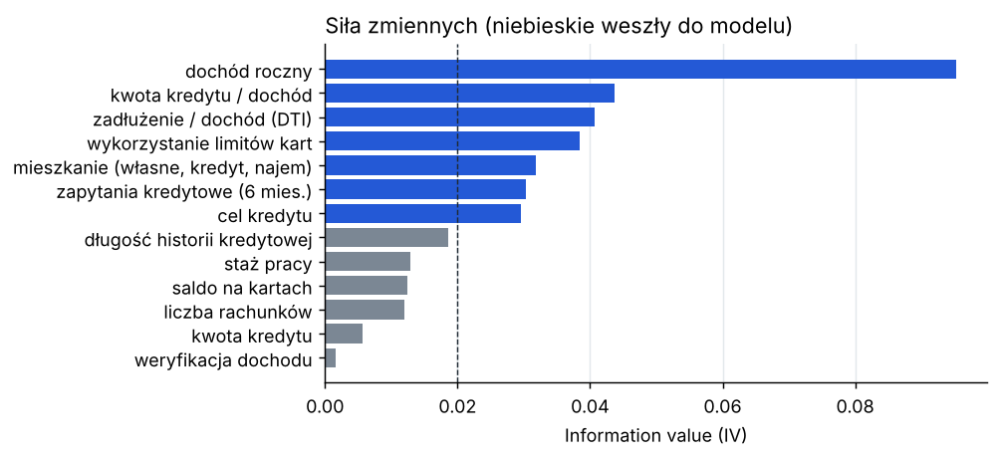
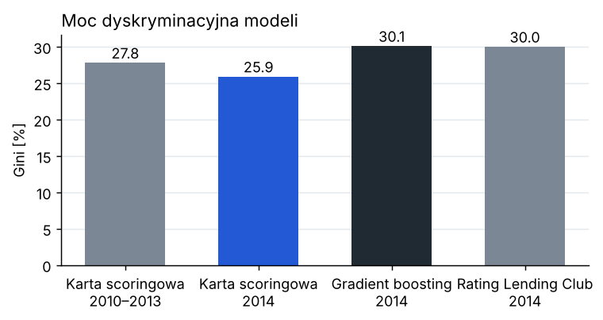
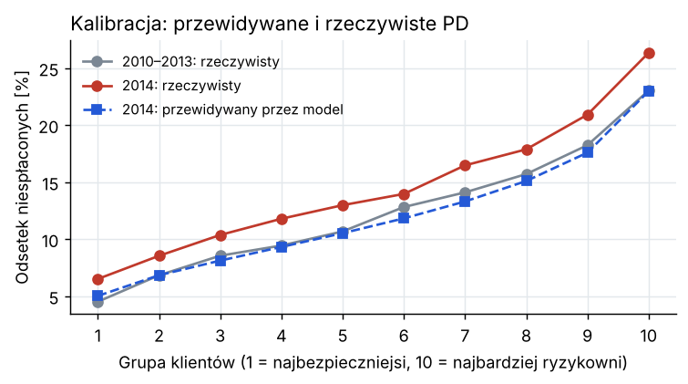
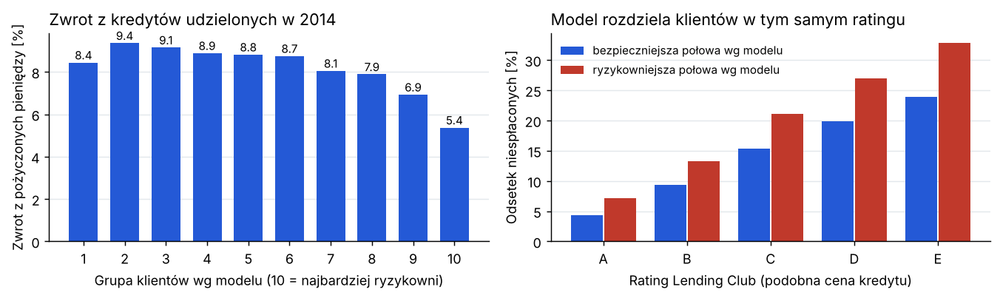

Model ryzyka kredytowego (PD) dla kredytów konsumpcyjnych
Piotr Żandarski · listopad 2026 · dane: Lending Club, kredyty 36-miesięczne z lat 2010–2014 Kod i pełny opis: github.com/piotrzan/credit-risk-scorecard · piotrzan.github.io · piotrzandarski314@gmail.com
Karta scoringowa z 7 zmiennych osiąga Gini 25,9% na kredytach z 2014 r., których nie widziała przy budowie (27,8% na próbie modelowej). Rozkład punktów jest stabilny (PSI = 0,004).
Model zaniża ryzyko w 2014 r.: przewiduje 12,1% niespłaconych kredytów, a było 14,6%. Przed użyciem trzeba go skalibrować na nowszych danych.
Przy podobnym oprocentowaniu model rozdziela klientów na lepszych i gorszych. W kategorii C platformy: 15,4% kontra 21,1% niespłaconych, zwrot 9,8% kontra 7,2%.
Najbardziej ryzykowne 10% klientów daje zwrot 5,4%, choć płaci najwyższe oprocentowanie. Ich ryzyko jest za tanio wycenione.
1. Cel
Bank albo platforma pożyczkowa musi przy każdym wniosku ocenić prawdopodobieństwo, że klient nie spłaci kredytu (PD). Zbudowałem kartę scoringową tak, jak robi się to w bankach, sprawdziłem ją na danych z późniejszego okresu i oceniłem, co jej wyniki oznaczają dla zysku z portfela.
2. Dane
Rzeczywiste kredyty z platformy Lending Club (USA), 36-miesięczne, z ostatecznym statusem. Klient „zły” to kredyt spisany na straty, w niewypłacalności albo z opóźnieniem powyżej 30 dni. Do modelu biorę tylko informacje znane w dniu złożenia wniosku.
Próba
Lata
Kredyty
Odsetek niespłaconych
Modelowa
2010–2013
166 459
12,4%
Test out-of-time
2014
153 204
14,6%
3. Metoda
Zmienne liczbowe dzielę na przedziały i łączę je, aż odsetek złych klientów zmienia się w jednym kierunku. Rzadkie kategorie łączę w „inne”.
Dla każdego przedziału liczę WoE = ln(udział dobrych / udział złych), a dla zmiennej IV. Biorę zmienne z IV ≥ 0,02, a z dwóch mocno skorelowanych silniejszą.
Regresja logistyczna na WoE; wszystkie współczynniki mają ten sam znak.
Punkty: 600 punktów to szansa spłaty 50:1, każde 20 punktów więcej podwaja szansę.
Walidacja na 2014 r.: Gini, KS, kalibracja w 10 grupach z testem dwumianowym, PSI. Dla porównania gradient boosting i rating samej platformy.

Rys. 1. Siła zmiennych (IV). Do modelu weszło 7 z 18. Zmienne o dawnych opóźnieniach i upadłościach prawie nic nie mówią, bo platforma odrzucała wnioski z poważnymi problemami.
4. Walidacja
Model
Gini
KS
Karta scoringowa, próba modelowa 2010–2013
27,8%
0,20
Karta scoringowa, test 2014
25,9%
0,19
Gradient boosting, test 2014
30,1%
0,22
Rating Lending Club, test 2014 (korzysta też z oceny FICO)
30,0%
0,24
Moc modelu spada na nowych danych tylko o 1,9 pkt proc. Rozkład punktów się nie zmienia (PSI 0,004), a najbardziej zmieniła się struktura celów kredytu (PSI 0,07, poniżej progu 0,1).
Kalibracja się nie zgadza: w każdej z 10 grup rzeczywisty odsetek niespłaconych jest wyższy niż przewidywany (test dwumianowy, p < 0,001). Kolejność klientów jest dobra, ale poziom ryzyka w 2014 r. wzrósł.

Rys. 2. Gini modeli.

Rys. 3. Przewidywany i rzeczywisty odsetek niespłaconych w 10 grupach klientów.
5. Strata oczekiwana
Z niespłaconych kredytów z lat 2010–2013: w chwili niewypłacalności do spłaty zostaje średnio 58% pożyczonej kwoty (EAD), a z tej kwoty nie udaje się odzyskać 89% (LGD, kredyty bez zabezpieczenia). Strata oczekiwana na 2014 r. (PD × LGD × EAD) wynosi 113,5 mln USD, a rzeczywista 136,3 mln USD. Niedoszacowanie o 17% wynika z zaniżonego PD.
6. Co to znaczy dla zysku
Zwrot liczę jako sumę wpłat klientów minus pożyczona kwota, podzieloną przez pożyczoną kwotę. Cały portfel z 2014 r. dał 8,3%.
Każda grupa klientów przynosi zysk, więc odrzucanie wniosków nie zwiększyłoby zysku. Zwrot spada jednak wyraźnie wraz z ryzykiem: z 8–9% w większości grup do 5,4% w najbardziej ryzykownej, mimo że ci klienci płacą średnio 15,9% odsetek.
W każdej kategorii ratingu platformy model odróżnia lepszą i gorszą połowę klientów. W kategorii E różnica jest największa: 23,9% kontra 32,8% niespłaconych, zwrot 8,5% kontra 4,3%.
Wniosek: wynik modelu warto dodać do ustalania ceny kredytu, a dla najbardziej ryzykownej grupy podnieść oprocentowanie albo obniżyć kwotę.

Rys. 4. Po lewej zwrot według grup ryzyka z modelu, po prawej odsetek niespłaconych w bezpieczniejszej i ryzykowniejszej połowie każdej kategorii ratingu.
7. Ograniczenia
Dane zawierają tylko kredyty udzielone. Nie wiadomo, jak spłacaliby odrzuceni klienci (reject inference), więc model może źle oceniać osoby spoza tej grupy.
Brak oceny z biura kredytowego (FICO), w praktyce jednej z najsilniejszych zmiennych.
Zwrot nie uwzględnia wartości pieniądza w czasie ani kosztów obsługi kredytu.